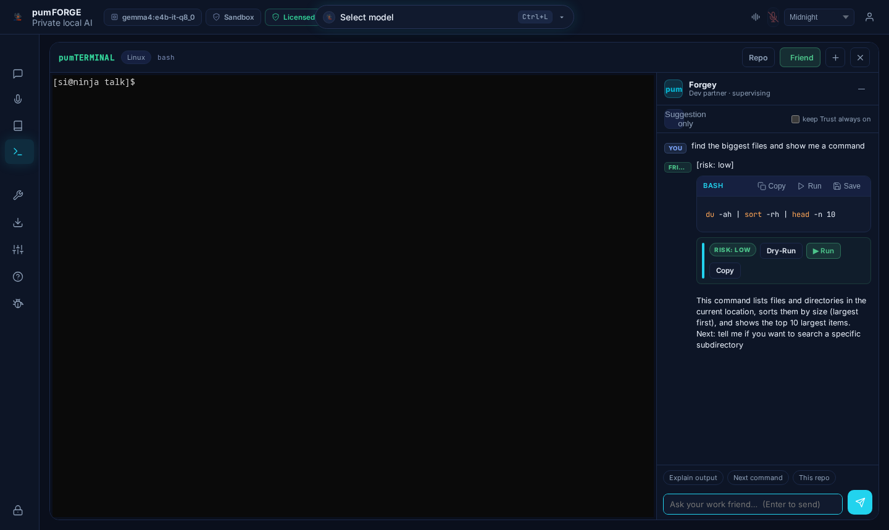
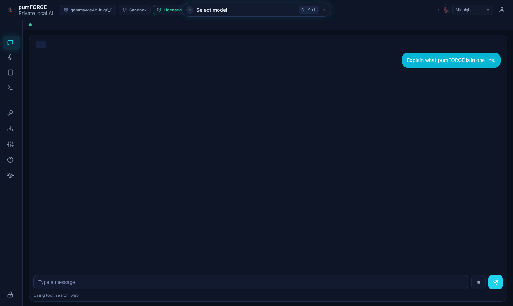
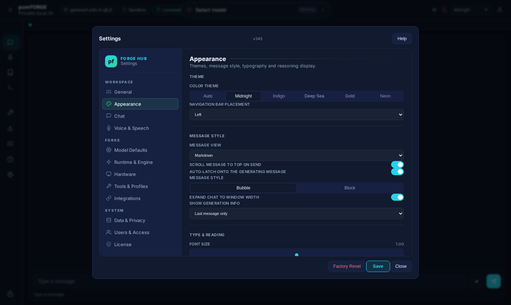
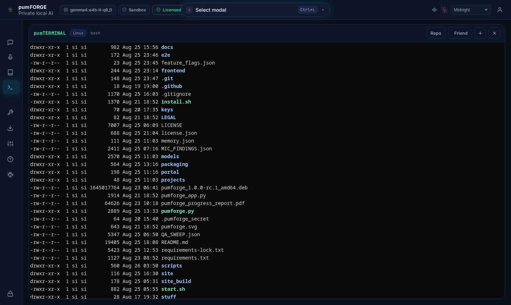

Your AI. Your machine.
Your co-worker.
One private app for chat, voice, images, documents, desktop control and a real terminal — with Forgey, an on-device dev partner who shares your live shell. Everything runs on your own hardware.
The headline feature
Meet Forgey — your AI co-worker.
Not a chatbot. A teammate who shares your live shell, watches the repo, and helps you build — without ever leaving your machine.
One shell. Two collaborators.
Forgey sees your current directory, your recent terminal output and your repo index — so it answers about the real state of your session, not a guess. It proposes real shell commands with a Run / Dry-Run / Copy button and a risk tag. Nothing executes without you.
In plain English. "Find the biggest files", "explain the last error", "what should I run next?"
A real command, tagged with its risk, ready to run or preview read-only.
Run once, Trust always, or Cancel. A suggestion-only lock keeps it hands-off.
Shared context
cwd, recent output and repo — Forgey knows where you are.
Consent-first
Risky actions always ask — Run once, Trust always, Cancel.
Dry-Run prep
Preview any command in a read-only sandbox first.
Patch & PR
Unified diffs, temp-branch apply, test gate and rollback built in.
See it in action
A look inside pumFORGE
Real screenshots from the running app — including Forgey in the shared terminal.




Features
One app. Every AI capability.
Chat, voice, images, documents, desktop control, terminal, coding — and an AI co-worker — in one private package.
Chat
Talk to local models. Streaming markdown, code highlighting, and context across sessions. No internet required.
Voice & cloning
Real-time voice with wake word and barge-in. Clone any voice from 15 seconds with 6 engines.
Terminal + Forgey
Full PTY terminal with SSH, plus Forgey sharing your live shell proposing consent-gated commands.
Desktop control
41 tools: open apps, manage files, screenshots, OCR, batch rename, volume and brightness.
Knowledge base
Chat with your documents. PDFs, notes, websites, YouTube, audio — indexed locally with RAG and citations.
Image generation
Generate and edit images locally with pum-sd — no API keys, no cloud, no limits.
Hardware monitor
Live CPU, RAM and VRAM usage, detected GPUs, and model-load guardrails with preflight estimates.
108 AI tools
Weather, web search, email, stocks, YouTube transcripts, arXiv, calculator, and more — all local.
Always private
No telemetry. No cloud. No data harvesting. Everything stays on your disk.
Head to head
How pumFORGE stacks up
Most local AI tools are chat boxes. pumFORGE is a complete workbench.
| Feature | pumFORGE | Local AI apps | Cloud AI |
|---|---|---|---|
| AI co-worker in terminal | Forgey | No | No |
| Voice cloning | 6 engines | 0 | 1–3 (paid) |
| Live hardware monitor | CPU/RAM/VRAM | No | No |
| Desktop control | 41 tools | 0–10 | 0 |
| Coding suite | 27 tools | 0 | Basic |
| Notebook + RAG | Yes + citations | Basic RAG | Yes (cloud) |
| Document creation | DOCX/XLSX/PPTX/PDF | No | Limited |
| LLM council | Yes | No | No |
| Runs offline | 100% | Yes | No |
| Data stays local | Always | Yes | No |
| Real terminal + SSH | Yes | No | No |
| Image generation | Local | No | Cloud only |
Download
Up and running in 60 seconds.
One install. No account. No cloud. Your AI starts local.
curl -fsSL https://pumforge.com/install.sh | shSHA256: Loading...